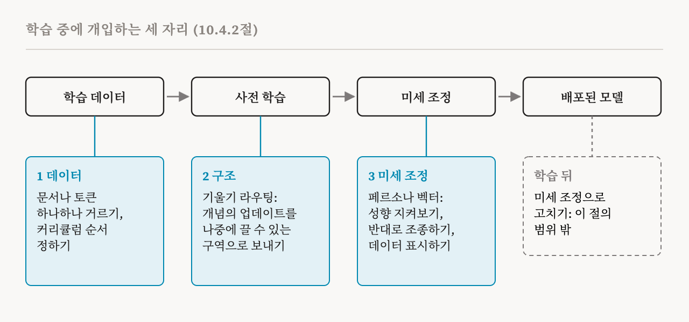
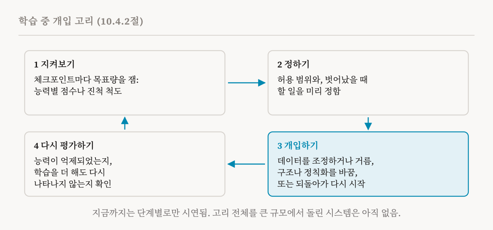

26편과 27편은 학습하는 동안 모델이 어떻게 바뀌는지 살펴봤습니다. 이번 편은 이 책의 10.4절(90–93쪽)로, 그 지식을 안전을 위한 두 목표에 씁니다. 능력이 나타나기 전에 내다보는 것, 그리고 학습이 아직 진행 중일 때 개입하는 것입니다. 이 책에서 학습 동역학을 다루는 장도 여기서 끝납니다.
작은 실행과 중간까지 한 실행으로 예측하기
규모 법칙은 학습하기 전에 전체 손실을 예측할 수 있음을 보여 주지만, 27편에서 본 것처럼 상전이 때문에 개별 능력에는 이런 식의 외삽이 통하지 않습니다. 그래서 예측은 특정한 행동을 직접 겨냥합니다. 이 문제가 가장 명시적으로 제기된 것은 암기입니다. 2023년의 한 연구는 모델을 학습시키기 전에, 그 모델이 특정한 학습 시퀀스를 외울지 예측하는 과제를 내놓았습니다. 저자들은 실제 사례 가운데 예측이 잡아내는 비율인 재현율을 최적화해야 한다고 주장했습니다. 놓친 사례 하나는 그 시퀀스를 유출하는 모델을 끝까지 학습시켰다는 뜻입니다. 잘못된 경보 하나는 값싼 시험 실행 하나를 버리는 것으로 끝납니다. 저자들은 다 학습한 더 작은 모델로 예측하는 기준선과, 목표 실행의 중간 체크포인트로 예측하는 기준선을 세우고, 정해진 예측 예산을 모델 크기와 토큰 수에 어떻게 나눌지도 권고했습니다.
안전에 중요한 행동 예측하기
창발 자체도 학습에 개입해서 예측할 수 있습니다. 목표 과제로 미세 조정하면 어떤 능력이 나타나는 지점이 덜 뛰어난 모델 쪽으로 당겨집니다. 이 이동이 미세 조정 데이터의 양에 따라 어떻게 바뀌는지 맞추면, 2024년의 한 연구가 창발 법칙이라고 부른 것을 얻습니다. 작은 모델만 써서도 이 법칙은 계산량을 최대 네 배 더 들여 학습한 모델에서 그 능력이 나타났을지를 예측합니다.
드문 해로운 행동은 통계적으로 예측할 수 있습니다. 질의 몇백 개로 시험해서는 보이지 않을 만큼 드문 행동도, 모델이 질의 수백만 개에 답하다 보면 나타날 수 있습니다. 2025년의 한 연구는 작은 질의 표본에서 관찰한, 어떤 행동을 끌어낼 확률의 최댓값이 질의 수에 따라 예측 가능하게 커진다는 것을 발견했습니다. 그 덕분에 위험한 화학 합성을 돕거나 권력을 추구하는 행동 같은 것의 위험을, 실제 배포 규모의 질의량으로 최대 세 자릿수, 즉 천 배까지 외삽할 수 있었습니다.
학습 뒤의 실패도 비슷하게 분석할 수 있습니다. 사람의 피드백을 이용한 강화 학습(RLHF)은 사람의 선호에 맞춰 모델을 미세 조정하는 흔한 방법이고, 그 과정에서 체크포인트가 차례로 저장됩니다. 2026년의 한 연구는 이어지는 RLHF 체크포인트 사이의 전이를 네 종류로 나눴습니다. 보상 해킹, 붕괴, 대리 지표에 대한 정렬 부족, 평가자마다의 불일치입니다. 보상 해킹에서는 모델이 높은 보상을 받는 방법을 찾아내는 동안 사용자가 실제로 느끼는 품질은 떨어집니다. 붕괴에서는 둘 다 떨어집니다. 이렇게 나누면 체크포인트들의 평균으로는 놓치는 실패를 잡아낼 수 있습니다. 보상 모형의 불확실성, 정책이 얼마나 멀리 표류했는지, 출력이 얼마나 다양한지 같은 학습 동역학의 진단값에 맞춘 모형은 나중의 보상 해킹을 ROC-AUC 0.82로 예측했습니다. 0.5가 찍기 수준이고 1이 완벽한 척도입니다.
내부 신호를 쓰면 미세 조정의 결과까지 예측할 수 있습니다. 활성 공간의 페르소나 특징은 미세 조정한 모델이 창발적 정렬 실패를 보일지를 예측합니다. 창발적 정렬 실패란 좁은 과제로 미세 조정했을 뿐인데 모델이 폭넓게 나쁘게 행동하게 되는 일입니다. 미세 조정을 시작하기도 전에 얻을 수 있는 신호로도 결과 모델이 얼마나 정렬될지 예측할 수 있습니다. 이런 결과 뒤에 있는 연구 의제는 31편에서 다시 다룹니다.
두 가지가 더 있습니다. 첫째는 조기 경보로서의 내부 전조입니다. 어떤 메커니즘이 그것이 뒷받침하는 능력이 행동으로 나타나기 전에 생긴다면, 내부를 지켜봐서 행동을 시험하는 것보다 일찍 그 능력을 알아챌 수 있습니다. 27편에서 본, 사실 지식보다 먼저 생기는 불러오기 회로와 문법 능력보다 먼저 생기는 문법적 어텐션 구조는 이런 시간 차가 있을 수 있음을 보여 줍니다. 진척 척도는 그 시간 차를 활용할 도구입니다. 둘째는 실행 사이의 차이입니다. 50번의 실행을 다룬 연구는 무작위 시드가 달라도 능력이 대체로 비슷한 단계에서 나타나고 표현도 일관되게 발달하지만, 어떤 실행은 크게 다르다는 것을 발견했습니다. 이런 예외는 실행 하나에 기댄 예측이 얼마나 불확실할 수 있는지 보여 줍니다.
조기 경보는 대부분 사후적이다
이 책은 이 주의에 상자 하나를 따로 할애합니다. 모델 내부의 변화가 행동의 변화보다 앞선다는 것을 보인 사례는 거의 모두 사후적입니다. 연구자들은 학습이 끝난 뒤 완성된 메커니즘을 분석해서 진척 척도나 전조 구조를 찾고, 그다음 저장해 둔 체크포인트들에 거슬러 적용합니다. 27편에서 본, LLC로 전이를 찾아내는 방법에도 같은 문제가 있습니다. 반면 사전적 예측은 결과를 보기 전에 예측하는 것입니다. 위에서 본 암기 예측의 기준선을 빼면, 안전에 중요한 더 넓은 능력 전이를 사전적으로 예측하는 연구는 아직 덜 발달했습니다. 조기 경보 신호는 사전적으로 검증되어야 믿을 만하다고 할 수 있습니다.
학습 중에 개입하기
중요한 것은 학습이 끝나고 배포되는 모델입니다. 거기서 나쁜 행동을 발견했을 때의 일반적인 대응은 학습 뒤에 미세 조정을 더 하는 것인데, 이 절은 그것을 다루지 않습니다. 대안은 학습 중에 개입해서 원치 않는 능력이 생기지 않게 하거나, 그것이 생기는 방식을 통제하는 것입니다. 이 책은 세 가지 접근을 설명합니다. 학습 데이터를 바꾸는 것, 모델의 구조를 바꾸는 것, 미세 조정 중에 활성값에 개입하는 것입니다.

첫 번째 접근은 사전 학습 전에 데이터를 걸러 냅니다. 26편에서 만난 Deep Ignorance는 사전 학습 말뭉치에서 생물학적 위험 지식의 대리 지표를 걷어 내고, 남은 데이터로 파라미터 69억 개짜리 모델을 학습시킵니다. 걸러 낸 데이터로 학습한 모델은 겨냥한 지식을 얻지 않고, 그래서 적대적인 미세 조정으로 원치 않는 능력을 되살리기 어렵습니다. 반면 학습 뒤의 언러닝은 밑에 있는 지식은 그대로 둔 채 행동만 억누를 수 있습니다. 후속 연구는 거르는 단위를 문서에서 토큰으로 옮겼습니다. 희소 오토인코더로 토큰 하나하나에 이름표를 붙이고, 그 이름표로 가벼운 분류기를 학습시켰습니다. 토큰 단위로 거르면 문서 전체를 거를 때보다 원하는 능력을 덜 해치면서 원치 않는 능력을 없앨 수 있었습니다. 시험한 두 자릿수 범위에서 모델이 커질수록 더 효과적이었고, 거른 모델은 그 뒤에도 정렬할 수 있었습니다.
데이터의 순서도 중요합니다. 2026년의 한 연구는 한 과제를 다른 과제보다 먼저 보여 주는 불균형한 사전 학습 커리큘럼에서, 모델이 과제들을 차례로 서로 떼어 낼 수 있는 회로에 담는다는 것을 발견했습니다. 그 결과 나중에 그중 하나를 거절하도록 미세 조정하는 일이 더 정확하게 겨냥되었습니다.
데이터를 바꾸면 파문이 번진다
이 책은 경고 상자를 하나 덧붙입니다. 학습 데이터에서 무언가를 빼는 일은 뺀 데이터에만 작용하지 않습니다. 2025년의 한 연구에서는 개인 정보를 지우자 남은 개인 정보가 더 많이 외워질 수 있었습니다. 또 한 사람의 정보를 더하자 다른 사람들의 정보가 외워지는 정도가 약 7.5배로 커졌습니다. 어떤 시퀀스가 외워질지는 학습의 다른 곳에서 본 비슷한 시퀀스에 달려 있기 때문입니다. 잠재 학습(subliminal learning)은 데이터가 그 내용으로는 알 수 없는 성향을 전할 수 있음을 보여 줍니다. 학생 모델이 숫자 나열처럼 아무 관련 없어 보이는 데이터를 통해 교사 모델의 숨은 편향을 물려받을 수 있습니다. 이런 전달은 '갈림 토큰'이라는 소수의 토큰이 실어 나르고, 앞쪽 층에 달려 있습니다. 그래서 거르기와 언러닝은 모델이 더 이상 뺀 데이터로 하지 않는 일만이 아니라, 남은 데이터로 하는 일까지 보고 평가해야 합니다.
메커니즘이 생기는 자리 정하기
두 번째 접근은 구조를 바꿉니다. 기울기 라우팅은 고른 개념에 대한 학습 업데이트를 어떤 파라미터가 받을지 제한해서, 그 개념에 대한 계산이 신경망의 지정된 구역에 자리 잡게 합니다. 이 변화만으로 학습된 모델이 더 안전해지지는 않습니다. 이 변화는 메커니즘이 생기는 자리를 정해서, 지정한 구역을 막아 끄는 것 같은 나중의 개입이 깔끔하고 국소적이 되게 합니다. 그 선례는 19편과 27편의 번진 키 변형입니다. 구조를 바꾸면 메커니즘이 언제 생기는지, 아예 생기는지까지 통제할 수 있음을 보였습니다.
미세 조정 중에 지켜보고 조종하기
세 번째 접근은 미세 조정 과정 자체에 개입합니다. 학습 뒤에 미세 조정으로 모델을 고치는 것은 범위 밖이지만, 미세 조정 과정에 개입하는 것은 범위 안입니다. 페르소나 벡터가 지금의 예입니다. 페르소나 벡터는 아첨, 환각하는 경향, 악의 같은 성격 특성에 대응하는 활성 공간의 방향으로, 그 특성을 평범한 말로 서술한 것에서 자동으로 뽑아낼 수 있습니다. 미세 조정 중에 의도했든 의도하지 않았든 성격이 바뀌면 그 변화는 해당 벡터를 따라 움직인 정도와 강하게 상관되고, 이것이 지켜보는 도구가 됩니다. 미세 조정하는 동안 예방 차원에서 이 벡터를 따라 조종하면 모델이 그 특성을 덜 얻습니다. 그리고 미세 조정 전에 학습 데이터를 이 벡터에 사영하면, 그 특성을 불러올 데이터를 데이터셋 전체 수준에서도 예시 하나하나의 수준에서도 표시할 수 있습니다.
개입의 고리
이런 조각들은 일반적인 절차 하나를 시사하고, 이 책은 그것을 네 단계로 정리합니다. 지켜보기: 능력별 점수나 내부의 진척 척도 같은 목표량을 체크포인트마다 잽니다. 정하기: 그 양의 허용 범위와 벗어났을 때 할 일을 미리 정합니다. 개입하기: 범위를 벗어나면 데이터 구성을 조정하거나 원치 않는 데이터를 걸러 내고, 구조나 정칙화를 겨냥해서 바꾸거나, 벗어나기 전의 체크포인트로 되돌아가 바꾼 설정으로 다시 시작합니다. 다시 평가하기: 개입한 뒤 모델을 다시 평가해서, 겨냥한 능력이 억제되었고 학습을 더 해도 다시 나타나지 않는지 확인합니다. 페르소나 벡터는 미세 조정 단계에서 이 모든 단계를 수행합니다.

하지만 이 고리를 처음부터 끝까지 큰 규모에서 구현한 시스템은 아직 발표되지 않았습니다. 기존 연구들은 단계 하나하나를 보여 주었습니다.
열린 질문
이 책은 세 가지를 꼽습니다. 첫째, 데이터를 효과적으로 걸러 내려면 없애려는 능력에 어떤 학습 데이터가 기여하는지 알아야 합니다. 토큰 단위 거르기는 데이터 귀속에서 착안했지만, 30편에서 설명할 영향 함수 같은 방법이 관련 데이터를 믿을 만하게 찾을 수 있는지는 분명하지 않습니다. 둘째, 규모입니다. Deep Ignorance는 파라미터 69억 개 규모에서 작동하고, 토큰 단위 거르기는 시험한 범위에서 갈수록 효과적이었지만, 최전선 규모에서도 데이터 거르기가 효과적이고 감당할 만한 비용일지는 열려 있습니다. 셋째, 배포된 모델들은 학습 중의 안전장치를 더 강하게 만들 수 있다는 것을 보여 주지만, 어떻게 하는지는 보여 주지 않습니다. 가중치가 공개된 gpt-oss 모델은 비슷한 다른 공개 모델보다 미세 조정하기가 훨씬 어려운데, 개발자들은 그 뒤에 있는 학습 절차를 다 공개하지 않았습니다. 이런 저항성을 어떻게 얻는지 이해하면 다른 공개 모델에도 비슷한 안전장치를 만들 수 있고, 미세 조정이 행동을 어떻게 바꾸는지도 더 분명해질 것입니다.
이 장을 한눈에
이 책은 10장을 이렇게 요약합니다. 학습 동역학은 설명할 대상으로 연구할 수 있습니다. 그러면 학습 중에 표현과 메커니즘이 어떻게 발달하는지 알 수 있습니다. 도구로 쓸 수도 있습니다. 메커니즘의 위치를 찾고, 상전이를 찾아내고, 학습에 개입해서 인과적 가설을 시험하는 데 씁니다. 학습 동역학을 이해하면 능력이 언제 나타날지 예측하고 학습 중의 개입을 이끄는 데에도 도움이 됩니다. 하지만 지켜보기와 개입을 하나로 엮은 완전한 시스템은 아직 큰 규모에서 시연되지 않았습니다. 다음 장은 모델이 어떻게 바뀌는지에서, 학습 예시 하나하나가 모델의 행동을 어떻게 빚는지로 넘어갑니다.
| 목표 | 예 | 현재 상황 |
|---|---|---|
| 예측하기 | 작은 실행이나 중간까지 한 실행, 창발 법칙, 드문 행동 외삽, RLHF 진단, 내부 신호 | 대부분 사후적, 실행 하나는 불확실한 길잡이 |
| 데이터에 개입하기 | 문서나 토큰 거르기, 커리큘럼의 순서 | 파문 효과, 최전선 규모는 미검증 |
| 구조에 개입하기 | 기울기 라우팅 | 나중의 수정을 깔끔하게 함, 그 자체로 더 안전해지지는 않음 |
| 미세 조정 중에 개입하기 | 페르소나 벡터로 지켜보기, 조종하기, 데이터 표시하기 | 미세 조정 단계만 다룸 |
| 용어 | 뜻 |
|---|---|
| 예측 | 모델을 학습시키거나 배포하기 전에 그 행동을 내다보는 것 |
| 재현율 | 실제 사례 가운데 예측이 잡아내는 비율 |
| 창발 법칙 | 미세 조정이 창발 지점을 어떻게 옮기는지 맞춘 식으로, 더 큰 모델의 창발을 예측하는 데 씀 |
| RLHF | 사람의 피드백을 이용한 강화 학습, 사람의 선호에 맞춘 미세 조정 |
| 보상 해킹 | 출력의 실제 품질은 떨어지는데 높은 보상을 받는 것 |
| ROC-AUC | 예측기가 두 부류를 얼마나 잘 가르는지, 0.5는 찍기 수준이고 1은 완벽함 |
| 언러닝 | 학습이 끝난 모델에서 어떤 능력을 지우려는 시도 |
| 데이터 거르기 | 학습 전에 학습 데이터에서 원치 않는 내용을 빼는 것 |
| 잠재 학습 | 어떤 성향이 그것과 무관해 보이는 데이터를 통해 다른 모델로 옮겨 가는 것 |
| 기울기 라우팅 | 한 개념에 대한 학습 업데이트를 신경망의 고른 구역으로 보내는 것 |
| 페르소나 벡터 | 성격 특성에 대응하는 활성 공간의 방향 |
| 학습 중 개입 고리 | 지켜보기, 범위 정하기, 개입하기, 다시 평가하기 |
29편에서는 이 책의 학습 데이터 귀속 장을 시작합니다. 모델의 출력이 학습 데이터의 어디에서 왔는지 찾는 일로, 정확히 일치하는 문자열부터 봅니다.